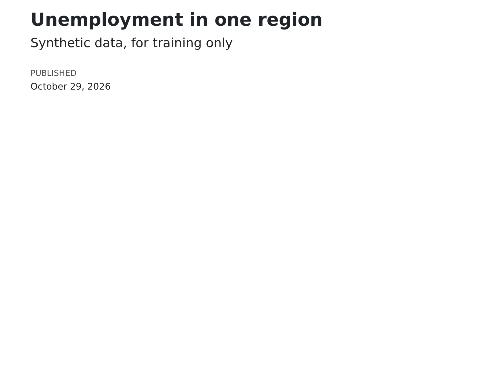
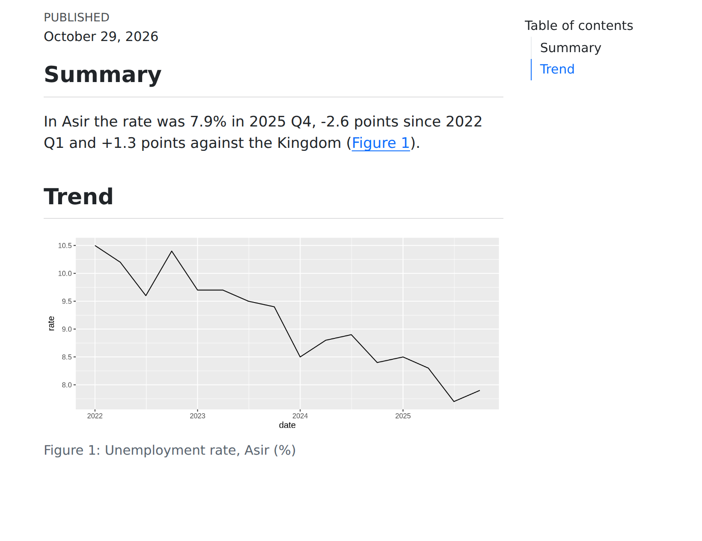
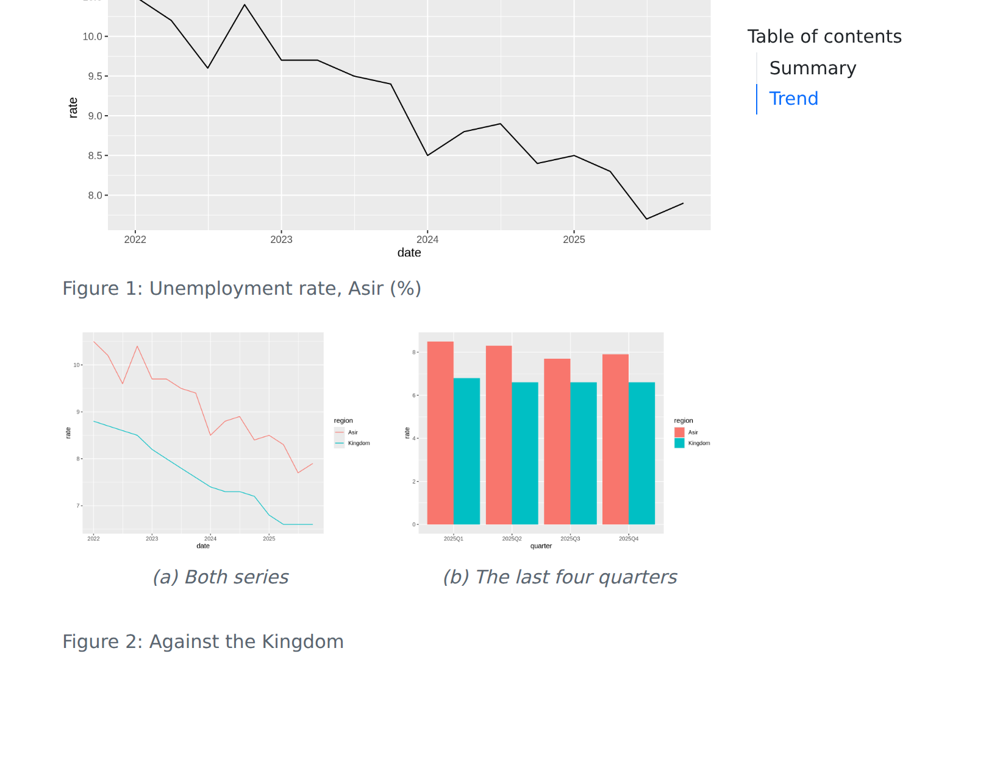
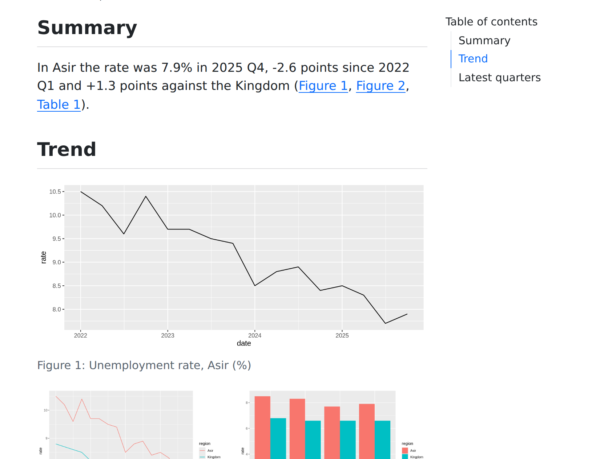
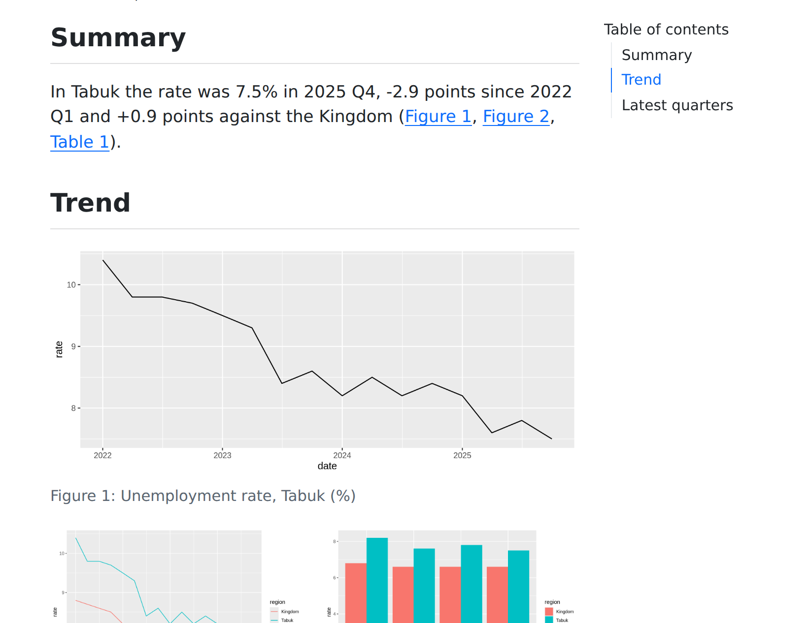

التطبيق العملي 1 · الحل
مذكرة عن منطقة: من السكربت إلى التقرير
note.qmd
لا يوجد note.qmd بعد
---
title: "Unemployment in one region"
subtitle: "Synthetic data, for training only"
date: today
format:
html:
toc: true
embed-resources: true
execute:
echo: false
---
```{r}
#| include: false
library(tidyverse)
library(tinytable)
rates <- read_csv("unemployment.csv")
REGION <- "Asir"REGION <- "Tabuk"
area <- rates |> filter(region == REGION)
kingdom <- rates |> filter(region == "Kingdom")
now <- last(area$rate)
then <- first(area$rate)
gap <- now - last(kingdom$rate)
```
## Summary
In `r REGION` the rate was
`r scales::number(now, accuracy = 0.1)`% in 2025 Q4,
`r scales::number(now - then, accuracy = 0.1, style_positive = "plus")`
points since 2022 Q1 and
`r scales::number(gap, accuracy = 0.1, style_positive = "plus")`
points against the Kingdom (@fig-trend).points against the Kingdom (@fig-trend, @fig-compare, @tbl-recent).
## Trend
```{r}
#| label: fig-trend
#| fig-cap: !expr str_glue("Unemployment rate, {REGION} (%)")
#| fig-width: 8
#| fig-height: 3.5
ggplot(area, aes(date, rate)) + geom_line()
```
```{r}
#| label: fig-compare
#| fig-cap: "Against the Kingdom"
#| layout-ncol: 2
#| fig-subcap: ["Both series", "The last four quarters"]
both <- rates |> filter(region %in% c(REGION, "Kingdom"))
ggplot(both, aes(date, rate, colour = region)) +
geom_line()
both |>
filter(quarter >= "2025Q1") |>
ggplot(aes(quarter, rate, fill = region)) +
geom_col(position = "dodge")
```
## Latest quarters
```{r}
#| label: tbl-recent
#| tbl-cap: !expr str_glue("Unemployment rate, {REGION} (%)")
area |>
select(quarter, rate) |>
slice_tail(n = 4) |>
tt() |>
theme_html(portable = TRUE)
```
::: {.callout-note collapse="true" title="Method"}
Rates are the unemployed as a share of the labour force.
The data are synthetic, made for training.
:::





1
نبدأ بالترويسة ومقطع الإعداد. أعلى
analysis.R ينتقل إليه تقريبًا كما هو؛ وinclude: false يُبقيه خارج الصفحة.2
نكتب الملخص مرة واحدة، وكل رقم فيه بـ R داخل النص. ويأخذ الرسم البياني وسمًا، وعنوانًا يتبع
REGION، وحجمًا.3
الشكل الثاني رسمان بيانيان في عمودين. يسمّي
fig-subcap كل رسم منهما، ويسمّي fig-cap الشكل كله.4
نضيف الجدول وملاحظة منهجية مطوية، ونُحيل من الملخص إلى كل شكل وجدول.
5
اختبار الإنجاز: نغيّر
REGION ونولّد التقرير، فيتغيّر كل رقم وعنوان ورسم بياني. لا شيء في النص مكتوب يدويًا.